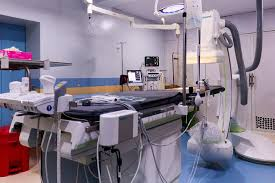

Nakaseke International Hospital
Compassion • Care • Excellence
Compassion • Care • Excellence
Providing compassionate, professional, and quality healthcare services to individuals, families, and communities in Nakaseke District and beyond.
Nakaseke International Hospital is a healthcare facility located in Nakaseke District, Uganda. We are committed to providing quality healthcare services with compassion, professionalism, and respect for every patient.
Our goal is to support healthier communities through accessible medical care, patient education, and a commitment to improving healthcare delivery.
To provide compassionate, accessible, and quality healthcare services that improve the health and well-being of the communities we serve.
To become a trusted healthcare institution recognized for excellence, innovation, and patient-centered care.
Learn More About UsExplore the healthcare services and facilities presented by Nakaseke International Hospital.
Emergency medical assessment and care for patients requiring urgent attention.
Maternal healthcare services supporting mothers during pregnancy, childbirth, and postnatal recovery.
Medical consultations, examinations, diagnosis, and treatment for patients who do not require admission.
Laboratory investigations and diagnostic testing to support medical decisions.
Pharmaceutical services and medication guidance to support patient treatment.
Surgical facilities designed to support appropriate medical procedures and patient care.
Discover the medical facilities and equipment featured on our website.

State-of-the-art operation theatre.

Well-stocked pharmacy.
Advanced laboratory facilities.

Comfortable maternity ward.
Patient beds and inpatient facilities.
Healthcare professionals providing medical attention.

Equipment supporting healthcare delivery.
A commitment to professional and compassionate patient care.
Medical equipment and facilities supporting patient diagnosis and treatment.
Treating every patient with dignity, respect, and compassion.
Working toward healthcare services that meet community needs.
Contact Nakaseke International Hospital for information about consultations, available services, and appointment arrangements.
Contact Our HospitalIf you are experiencing a medical emergency, seek immediate assistance from the nearest available emergency medical facility.
Contact Nakaseke International Hospital directly to confirm emergency service availability and obtain assistance.
Nakaseke District, Uganda
Visit our hospital or contact our team for directions and information about available medical services.
Contact & DirectionsMap shows Nakaseke District, not the hospital's verified exact location.